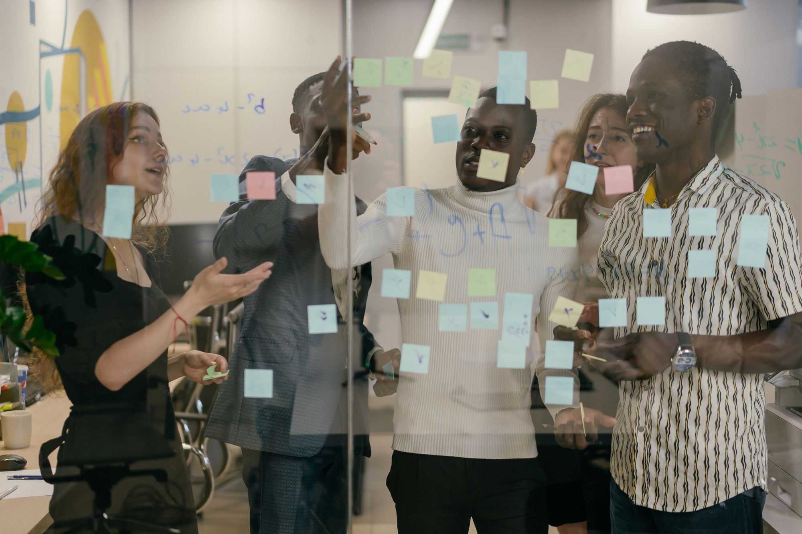

Digitale Transformation › vom Zielbild zur betriebsbereiten Organisation.
Transformation ist mehr, als Abläufe digital zu machen — sie verändert, wie ein Unternehmen arbeitet, entscheidet und Geld verdient. Wir übersetzen ein abstraktes Zielbild in einen priorisierten Pfad und begleiten ihn, bis Strategie, Prozesse, Rollen und Daten zusammenpassen und die Organisation betriebsbereit ist.
Warum digitale Transformation so oft bei der Präsentation stehen bleibt.
Transformation scheitert selten an der Idee. Drei Muster verhindern immer wieder, dass aus dem Zielbild gelebter Betrieb wird.
Strategie wird nie konkret
Es gibt ein Zielbild, eine Vision, vielleicht eine Roadmap auf hoher Flughöhe — doch ein priorisierter Pfad bis zum ersten betriebsbereiten Schritt fehlt. Solange die Strategie abstrakt bleibt, bleibt Transformation eine Präsentation, die in Workshops gefeiert und im Tagesgeschäft beiseitegelegt wird.
Werkzeug zuerst, Veränderung später
Eine Plattform wird eingeführt und als Transformation verkauft — doch ein neues Werkzeug allein lässt die Organisation unverändert. Wird das Werkzeug zuerst gekauft und die eigentliche Veränderung von Rollen und Abläufen vertagt, entsteht digitale Kosmetik: derselbe Betrieb, bloß teurer.
Die Organisation zieht nicht mit
Strategie und Technik stehen, doch die Lösung wird eingeführt, während Rollen, Verantwortung und Anreize unverändert bleiben — und niemand arbeitet wie gedacht. Transformation ist zu drei Vierteln Organisation und Kultur; wer das überspringt, baut auf Sand.

Was unsere Transformationsberatung umfasst.
Vier Bausteine, die aus einem Zielbild eine betriebsbereite Organisation machen.
Zielbild in einen Pfad übersetzen
Wir machen aus der Vision einen priorisierten Pfad: Welche Veränderung zuerst, mit welchem Nutzen, in welcher Reihenfolge. Aus abstrakten Zielen werden überprüfbare Schritte mit klarem ersten Anwendungsfall — damit Transformation früh in die Umsetzung kommt und die Strategiephase verlässt.
Prozesse und Daten ausrichten
Transformation gelingt, wenn die Abläufe und die Datengrundlage zum Zielbild passen. Wir richten Prozesse neu aus, beenden Insellösungen und schaffen gemeinsame Daten — die Basis, auf der neue Geschäftsmodelle und Entscheidungen überhaupt funktionieren.
Rollen und Organisation mitverändern
Wir gestalten die organisatorische Seite mit: veränderte Rollen, klare Verantwortung, Entscheidungswege, die zum neuen Ablauf passen. Erst diese Veränderung macht aus einer digitalen Lösung die neue Normalität — fest im Arbeitsalltag verankert.
Bis zur Betriebsbereitschaft begleiten
Wir bleiben, bis der erste Transformationsschritt betriebsbereit ist: erprobt, verankert, von benannten Verantwortlichen getragen. Erst wenn die Organisation eigenständig weiterläuft und der nächste Schritt vorbereitet ist, gilt das Mandat als erfüllt.
In fünf Phasen vom Zielbild zur betriebsbereiten Organisation.
Jede Phase liefert ein eigenständiges Ergebnis — und an jedem Übergang entscheiden Sie neu.
Standortbestimmung und Zielbild schärfen
Wir klären, wo Sie heute stehen und wohin die Transformation wirklich führen soll — jenseits von Schlagworten. Aus einem vagen Zielbild wird ein gemeinsames Verständnis, an dem sich jeder weitere Schritt messen lässt.
Pfad und ersten Schritt festlegen
Aus dem Zielbild leiten wir einen priorisierten Pfad ab und wählen den ersten Schritt mit dem besten Verhältnis aus Wirkung und Machbarkeit. Für diesen Schritt klären wir Prozesse, Datengrundlage und die nötige organisatorische Veränderung.
Pilot: Veränderung im Kleinen erproben
Der erste Schritt wird in einem abgegrenzten Bereich erprobt — mit echten Abläufen, echten Daten und den betroffenen Rollen. So zeigt sich früh, ob die Veränderung in der Praxis trägt, bevor sie auf die ganze Organisation ausgerollt wird.
Rollout und organisatorische Verankerung
Der bewährte Schritt wird ausgerollt: Prozesse, Rollen und Systeme greifen ineinander, Verantwortung ist benannt, die alten Wege werden abgelöst. Hier entscheidet sich, ob aus dem Pilot betriebsbereite Realität wird.
Stabilisierung und nächster Schritt
Die neue Arbeitsweise wird stabilisiert, Kennzahlen bestätigen den Nutzen, und aus dem Gelernten entsteht der nächste Schritt auf dem Pfad. Transformation wächst so kontrolliert und Schritt für Schritt weiter — mit Wirkung, die bleibt.
Wo digitale Transformation wirklich ansetzt.
Vier Felder, in denen aus Digitalisierung echte Veränderung wird — wenn Organisation und Daten mitgehen.
Neue Erlöse aus digitalen Abläufen
Wo Daten und digitale Abläufe zusammenkommen, entstehen neue Angebote — etwa Services rund um ein Produkt. Transformation zeigt sich daran, dass Abläufe digital werden und darüber hinaus neue Wertschöpfung möglich wird, getragen von einer Organisation, die sie liefern kann.
Von Bauchgefühl zu belastbaren Daten
Wenn verstreute Daten zu einer gemeinsamen Grundlage werden, verändern sich Entscheidungen: schneller, faktenbasiert, über Bereichsgrenzen hinweg. Das ist mehr als ein Dashboard — es ist eine andere Art, das Unternehmen zu steuern.
Silos in durchgängige Abläufe überführen
Transformation löst die Trennung zwischen Abteilungen, die sich über Medienbrüche und Insellösungen zementiert hat. Durchgängige Abläufe und gemeinsame Daten verändern, wie Teams zusammenarbeiten — und machen Übergaben zur reibungslosen Selbstverständlichkeit.
Durchgängig über alle Schnittstellen hinweg
Vom ersten Kontakt bis zum Service: Ein durchgängiger digitaler Ablauf verändert, wie Kunden das Unternehmen erleben. Transformation bedeutet, diese Reise als Ganzes zu gestalten und über jede interne Grenze hinweg verbunden zu halten.
Vom Digitalisierungs-Stillstand bis zum laufenden Programm.
Wo Transformation ansetzt, hängt von Ihrer Lage ab. Wir holen Sie genau dort ab, wo Sie heute stehen, und richten das Vorgehen an Ihrer Realität aus.
Viel digitalisiert, nichts verändert
Tools überall, aber dieselbe Arbeitsweise: Erster Schritt ist, einen konkreten Ablauf samt Rollen wirklich zu verändern — als Beweis, dass Transformation mehr ist als Software.
Zielbild sucht den Pfad
Eine Vision ist da, der Weg dorthin fehlt: Erster Schritt ist, das Zielbild in priorisierte, überprüfbare Schritte zu übersetzen und mit dem wirkungsvollsten zu beginnen.
Gescheiterter Anlauf
Ein Programm wurde nach Wochen nicht weiterverfolgt: Erster Schritt ist die Ursachenklärung — lag es an Strategie, Organisation oder Umsetzung — und ein kleiner, sichtbarer Erfolg, der Vertrauen zurückbringt.
Wachstum erzwingt Veränderung
Die Organisation ist über ihre alten Strukturen hinausgewachsen: Erster Schritt ist, Prozesse und Rollen an die neue Größe anzupassen, bevor Werkzeuge das alte Chaos zementieren.
Generationswechsel
Übergabe und Modernisierung fallen zusammen: Erster Schritt ist, Wissen zu sichern und Abläufe zu standardisieren, damit die Transformation den Wechsel stützt und ihn sicher durch den Übergang trägt.
Wir passen die Transformation Ihrem Haus an — nicht umgekehrt.
Vier Grundsätze, die jedes Transformationsmandat bei uns prägen.
Woran Sie eine Transformationsberatung erkennen.
Drei Zusagen, an denen Sie uns im Verlauf messen können.
Wir liefern einen umsetzbaren Pfad
Unsere Arbeit mündet in einen priorisierten Pfad und einen ersten Schritt, der betriebsbereit wird — über die Strategiepräsentation hinaus bis in den gelebten Betrieb. Als Ergebnis zählt für uns ein Zielbild mit einem gangbaren Weg dorthin.
Wir verändern Organisation und Technik gemeinsam
Wir behandeln Rollen, Verantwortung und Kultur als Kern der Transformation, gleichrangig mit der Technik. Eine echte Transformation verändert die Arbeitsweise, während sie eine Plattform einführt — und genau so benennen wir sie auch im Angebot.
Wir bleiben bis zur Betriebsbereitschaft
Wir begleiten den Pfad, bis die Organisation eigenständig weiterläuft. Das Ziel ist eine betriebsbereite Organisation, die den nächsten Schritt selbst gehen kann und dauerhaft unabhängig von externer Beratung bleibt.
Wie wir Wirkung, Recht und Risiko absichern.
Transformation berührt Strategie, Daten und Menschen. Dafür gelten feste Leitplanken.
Wirkung wird überprüfbar gemacht
Jeder Schritt auf dem Pfad hat ein überprüfbares Ziel: Welche Entscheidung wird besser, welcher Aufwand sinkt, welche Kennzahl bewegt sich. So bleibt Transformation fest an der Realität und an Fakten gemessen, über die Workshop-Begeisterung hinaus — und Kurskorrekturen erfolgen auf Datenbasis.
Der Mensch trägt die Veränderung
Neue Abläufe und Rollen werden gemeinsam mit den Betroffenen gestaltet, im Dialog auf Augenhöhe. Wir legen fest, wer was entscheidet und verantwortet, damit die Organisation die Veränderung trägt — denn erst die Menschen machen aus einem Zielbild gelebte Praxis.
Häufige Fragen zur digitalen Transformation.
Die Fragen, die uns Geschäftsführung und Führungsteams zur digitalen Transformation am häufigsten stellen — offen beantwortet.
Was ist der Unterschied zwischen Digitalisierung und Transformation?
Wo fangen wir mit der Transformation an?
Warum scheitern Transformations-Vorhaben so oft?
Brauchen wir erst eine umfassende Strategie?
Ist Transformation dasselbe wie eine neue Plattform?
Wie stellen wir sicher, dass die Organisation mitzieht?
Wie lange dauert eine digitale Transformation?
Was kostet eine Transformationsberatung?
Sind wir an bestimmte Werkzeuge oder Plattformen gebunden?
Wie verhindern wir, dass die Transformation in Insellösungen zerfällt?
Passt Transformation auch zu einem mittelständischen Unternehmen?
Was, wenn ein früherer Transformationsanlauf bereits gescheitert ist?
Sprechen wir über Ihr Zielbild.
Der erste Schritt ist ein Erstgespräch von 30–45 Minuten. Wir klären Ihre Ausgangslage, die wichtigsten Engpässe und ob CX der richtige Partner ist. Wenn nicht, verweisen wir auf jemanden, der besser passt.
Erstgespräch anfragen →Diese Fragen klären wir, bevor ein Zielbild zur Veränderung wird.
Digitale Transformation braucht ein klares Zielbild und konkrete Umsetzungsschritte. Wir prüfen, welche Fähigkeiten, Prozesse und Rollen sich wirklich ändern müssen.
Welches Geschäftsziel steht dahinter?
Wir übersetzen das Zielbild in konkrete Entscheidungen: Kundennutzen, Effizienz, Geschwindigkeit, Qualität oder neue Leistungen.
Welche Prozesse müssen sich ändern?
Wir identifizieren die Abläufe, Rollen und Systeme, die den größten Beitrag zum Ziel leisten.
Wie wird Veränderung steuerbar?
Wir planen Phasen, Verantwortlichkeiten, Kennzahlen und Entscheidungswege, damit Transformation nicht in Einzelprojekten zerfällt.
Wie bleibt die Organisation mitgenommen?
Wir binden Führung, Fachbereiche und Nutzer früh ein, damit neue Arbeitsweisen angenommen werden.
Zwei Gründer. Ein klarer Fokus.
Johannes Reusch und Hans-Helmut "Hannes" Scheel führen CEx gemeinsam. Beide begleiten Mandate persönlich — mit Beratungserfahrung, Umsetzungsverantwortung und einem klaren Blick für den entscheidenden Fokus.


- Erfahrene Berater — jedes Mandat persönlich geführt
- Branchenübergreifend · vom Mittelstand bis zum Konzern
- Strukturiertes Vorgehen · nachvollziehbar und dokumentiert
- DACH-weit tätig